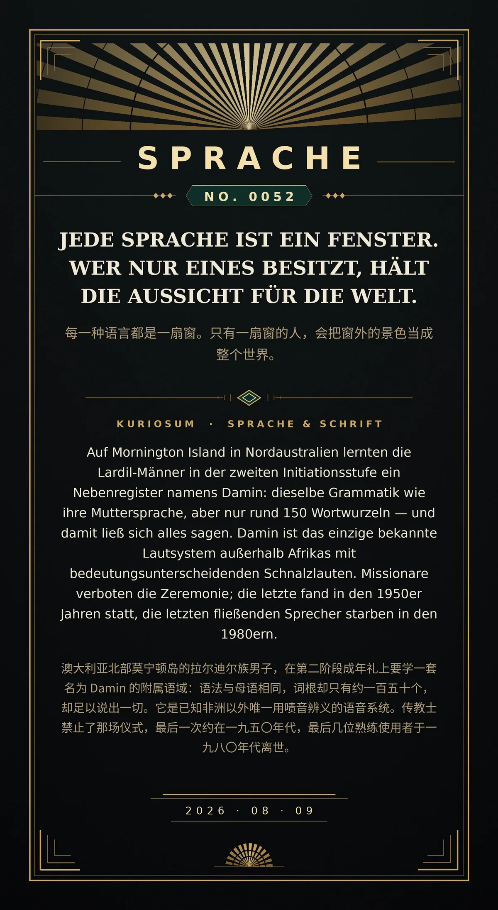

Jede Sprache ist ein Fenster. Wer nur eines besitzt, hält die Aussicht für die Welt.（每一种语言都是一扇窗。只有一扇窗的人，会把窗外的景色当成整个世界。）
Auf Mornington Island in Nordaustralien lernten die Lardil-Männer in der zweiten Initiationsstufe ein Nebenregister namens Damin: dieselbe Grammatik wie ihre Muttersprache, aber nur rund 150 Wortwurzeln — und damit ließ sich alles sagen. Damin ist das einzige bekannte Lautsystem außerhalb Afrikas mit bedeutungsunterscheidenden Schnalzlauten. Missionare verboten die Zeremonie; die letzte fand in den 1950er Jahren statt, die letzten fließenden Sprecher starben in den 1980ern.（澳大利亚北部莫宁顿岛的拉尔迪尔族男子，在第二阶段成年礼上要学一套名为 Damin 的附属语域：语法与母语相同，词根却只有约一百五十个，却足以说出一切。它是已知非洲以外唯一用啧音辨义的语音系统。传教士禁止了那场仪式，最后一次约在一九五〇年代，最后几位熟练使用者于一九八〇年代离世。）